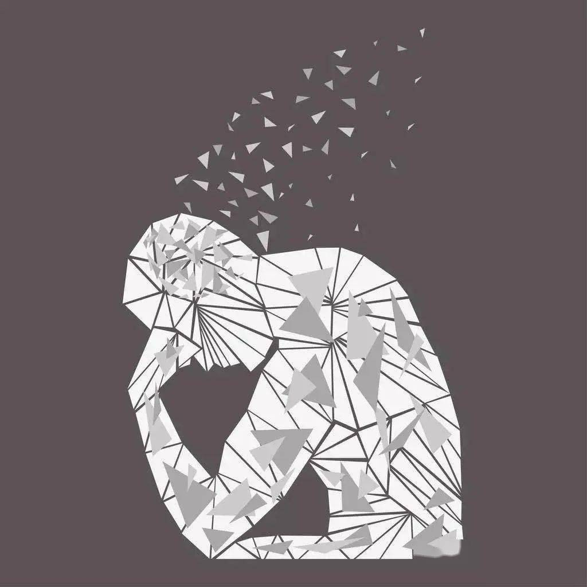

无用之用
所谓“无用之用”，就是那些看上去没有价值的事物所具有的独特品质，譬如枝繁叶茂的美、芬芳馥郁的香、律己达人的德与缥缈无踪的梦。庄子说过，“无用之用，方为大用”。哲学作为一门“无用”的学科，虽然不能为我们带来实际的回报，却能够给我们带来内心的平和与宁静。

"无用之用，方为大用”，讲的也是一种洞若观火的历史眼光。事物的价值在时间维度上是灵活可变的。当我们立足眼下的需求判定事物“无用”时，未来的可能性也许正随之悄悄远去。孔子一生传道未受时人重视，其仁爱思想却在后世流芳，成为中华传统文化的核心关键词。梵高生前热衷艺术却寂寂无名，其绚烂面作却在岁月淘沙的流变里成为人类对大自然浪漫想象的高度凝结。那些博大精深的人文理论与独树一帜的艺术风,格，的确无法像科学技术一般迅速创造巨大的经济价值，但它们会在时间的流逝里完成意义的镌刻，于某个意想不到的瞬问给予人们抚慰与感动。
或许庄子倡导“无用之用〞，是希望人们不囿于功利，看淡得失，以求心灵的舒适。而在今天，这给我们的启发更是勇敢冲破自我的局限，挣脱单一评价体系的禁锢，幸福而自在地拥抱远方的星辰大海。